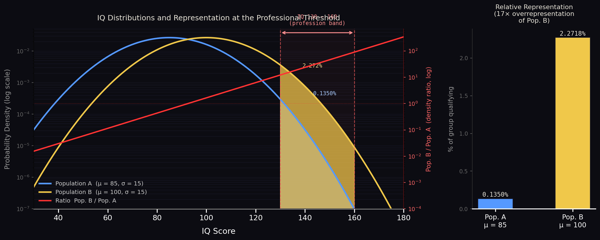

This is not an open empirical question. With h = 0.80, the mathematical upper bound on any environmental contribution to between-group differences is 0.60. The genetic contribution of 0.80 exceeds it by definition. Demanding identification of specific causal genes before accepting the inference is the same error as requiring knowledge of the Higgs mechanism before accepting Newtonian gravity.
Sociologists in the post-1970 tradition (Turkheimer, Flynn on environment) maintain that group differences are primarily environmental artefacts — products of poverty, stereotype threat, and biased test design.
Their position requires rejecting convergent evidence from adoption studies, twin research, reaction time data, and polygenic scores simultaneously.
The "equity" framework emerged not from new evidence but from political imperatives, effectively institutionalising the blank-slate hypothesis as official academic orthodoxy.
Psychometricians (Lynn, Jensen, Rushton) treat cognitive aptitude as a measurable, heritable trait shaped by natural selection under different environmental pressures over evolutionary timescales.
The Flynn Effect — rising IQ scores over generations — is real but represents nutritional and educational gains approaching genetic ceilings, not evidence of unlimited malleability.
Narrowing of gaps post-1970 reflects convergence toward (not beyond) genetic baselines under improved environmental conditions.
10⁸ is chosen because √(10⁸) = 10⁴ = 10,000 exactly — a clean round number that makes the elite count memorable. It is comparable to Germany (~84M) and smaller than Japan (~125M) or Russia (~144M), so it represents a realistic mid-sized developed nation. In that society, the functional cognitive engine — the group responsible for innovation, institutional design, and civilisational direction — comprises those 10,000 individuals: the 10⁻⁴ right tail. Price's Law is not a sociological opinion. It is a statistical regularity observed across scientific output, economic production, and military effectiveness.
